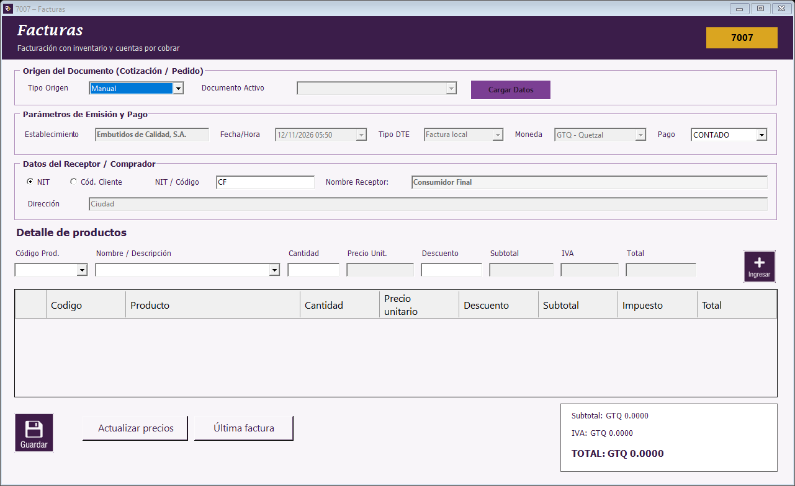

Seleccione NIT o Código cliente, escriba la identificación y presione Enter o salga del campo.
Compruebe el nombre y la dirección cargados. Para consumidor final escriba CF: se muestra Consumidor Final y Ciudad.
Seleccione el producto por código o descripción. La descripción muestra las existencias disponibles.
Ingrese una cantidad entera de paquetes y el descuento de la línea. El precio lo determina la lista del cliente.
Presione el botón + para agregar. Si repite un producto, se acumulan cantidad y descuento.
Revise el detalle, los totales y la condición CONTADO o CREDITO antes de guardar.

Quitar un producto
Seleccione su fila y presione Supr o Retroceso. La grilla no permite editar cantidades, precios o importes directamente. Para corregir una línea manual, elimínela y agréguela de nuevo.